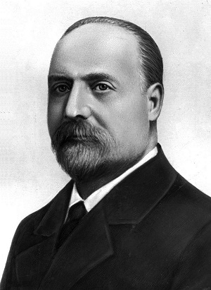
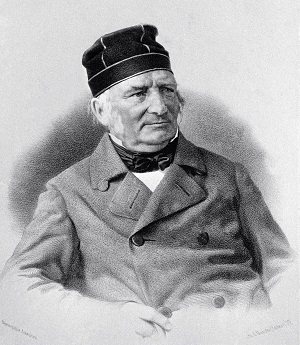
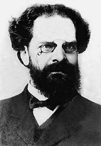

Ученые Фото Имя Годы жизни Достижения  Аристарх Аполлонович Белопольский 01.07.1854 - 16.05.1934 Разработал метод и сконструировал прибор, с помощью которых первым получил экспериментальное доказательство существования эффекта Доплера применительно к световым волнам. Белопольский применил эффект Доплера, проявляющийся в виде смещения спектральных линий в оптических спектрах, для исследований в астроспектроскопии. Он в числе первых определил элементы орбит нескольких переменных и спектрально-двойных звёзд, исследовал спектры новых звёзд и солнечной поверхности, краев и короны; — лучевые скорости небесных светил, один из пионеров в фотографировании их спектров с помощью спектрографов. Ученый обнаружил периодическое изменение лучевой скорости у цефеид. Он всесторонне исследовал кометы, вращение около оси Венеры, Юпитера и колец Сатурна. Внёс существенный вклад в развитие и оснащение Пулковской обсерватории и её отделений.  Василий Яковлевич Струве 15.04. 1793 - 23.11.1864 Один из основоположников звёздной астрономии, член Петербургской академии наук, первый директор Пулковской обсерватории. Струве принадлежит одно из первых в истории (1837) успешное измерение годичного параллакса звезды (Веги в созвездии Лиры). В середине XIX века участвовал в создании Лиссабонской астрономической обсерватории. В. Я. Струве был почётным членом многих иностранных академий и обществ. В 1913 году открытая русским астрономом Г. Н. Неуйминым малая планета номер 768 была названа Струвеана, в честь астрономов семейной династии Струве.  Павел Карлович Штернберг 3.04.1865 - 1.02.1920 Первая научная работа была посвящена продолжительности вращения Красного пятна на Юпитере. Остальные научные работы относятся к изучению вращательного движения Земли, фотографической астрономии, гравиметрии (определение силы тяжести). За свои гравиметрические определения в ряде пунктов европейской части России с маятником Репсольда получил серебряную медаль Русского географического общества. Изучал движение земных полюсов, вызывающее изменение широт различных мест на Земле. Выполнил капитальное исследование «Широта Московской обсерватории в связи с движением полюсов». Все эти работы помогают обнаруживать залежи полезных ископаемых. Сейчас такие исследования развернулись на территории нашей страны в огромных масштабах. Фотографические наблюдения двойных звезд, которые проводил Штернберг, были одними из первых в науке разработанные для точных измерений взаимного положения звездных пар. Полученные им сотни фотоснимков двойных звезд и других объектов служат и сейчас хорошим материалом для специальных исследований. Имя Штернберга носит Государственный астрономический институт Московского университета, лунный кратер и астериод № 995, открытый в 1923 году. Тихо Браге 14.12.1546 - 24.10.1601 Первым в Европе начал проводить систематические и высокоточные астрономические наблюдения, на основании которых Кеплер вывел законы движения планет. В ноябре 1577 года на небе появилась яркая комета. Тихо Браге тщательно проследил её траекторию вплоть до исчезновения видимости в январе 1578 года. Сопоставив свои данные с полученными коллегами в других обсерваториях, он сделал однозначный вывод: кометы — не атмосферное явление, как полагал Аристотель, а внеземной объект, втрое дальше, чем Луна. Свои научные достижения Браге изложил в многотомном астрономическом трактате. Сначала вышел второй том, посвящённый системе мира Тихо Браге и комете 1577 года. Первый же том (о сверхновой 1572 года) вышел позднее, в 1592 году в неполном виде. В 1602 году, уже после смерти Браге, Иоганн Кеплер опубликовал окончательную редакцию этого тома. Браге собирался в последующих томах изложить теорию движения других комет, Солнца, Луны и планет, однако осуществить этот замысел уже не успел.